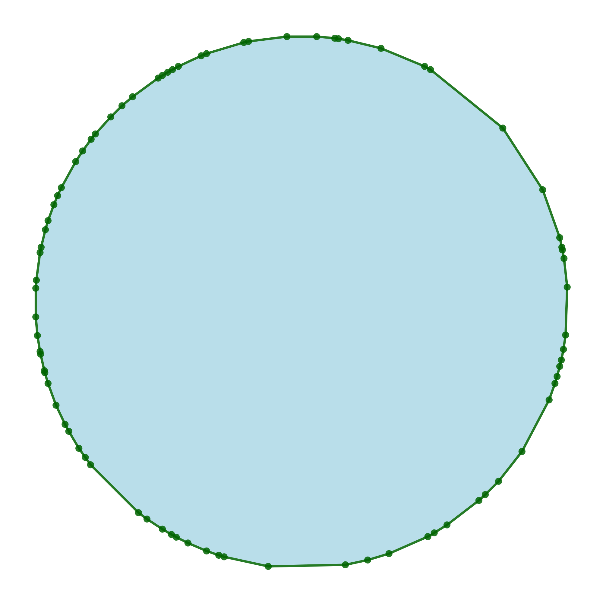
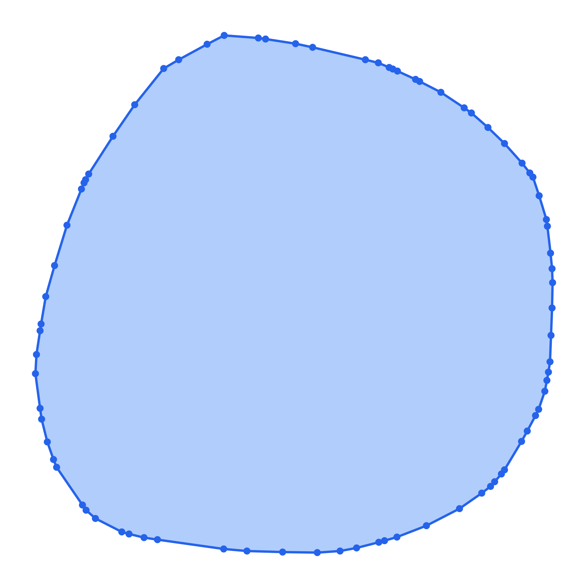
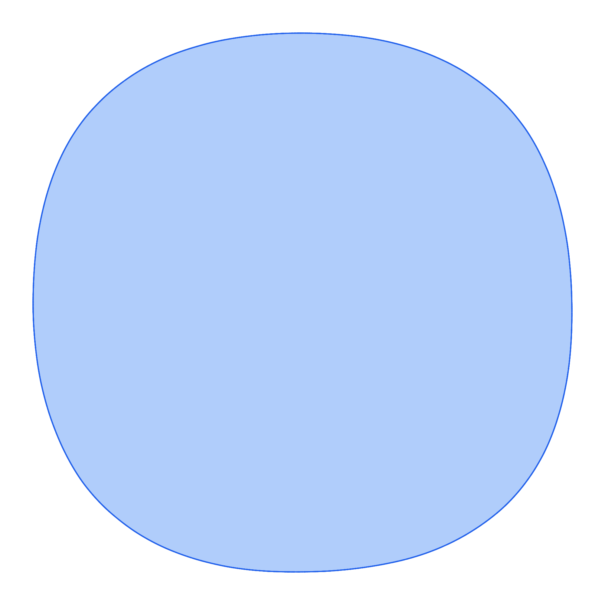
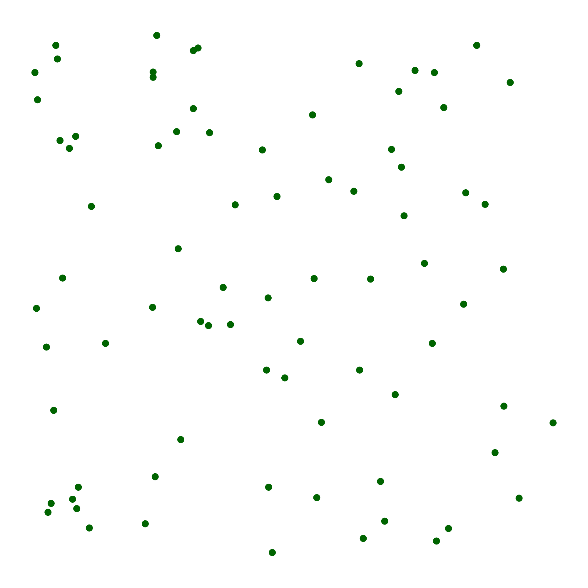
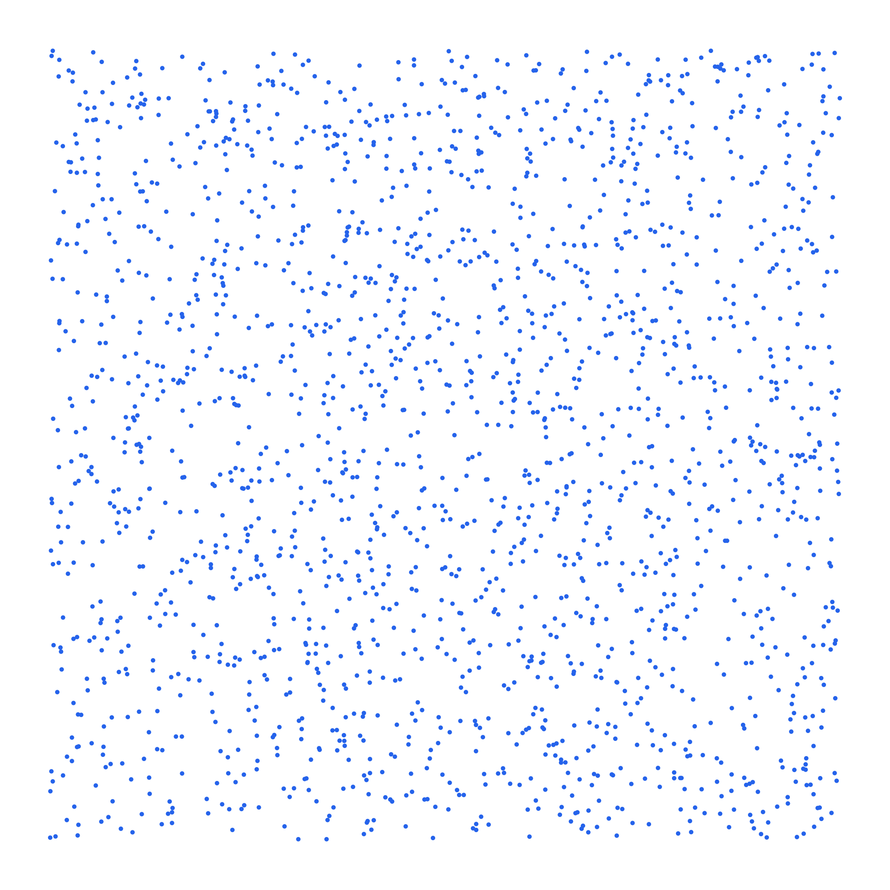
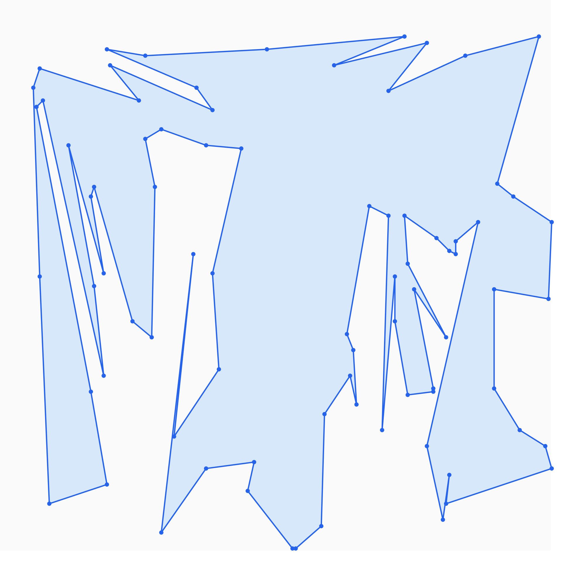

tgen vs jngen — Feature Comparison
Generated 2026-06-08 12:57 UTC
Comparison of non-trivial generation operations. See benchmarks below.
Graphs
| Operation | jngen | tgen | Uniformity | Complexity / notes | Benchmark |
|---|---|---|---|---|---|
| Connected random graph | YesGraph::random(n, m).connected()Docs | Yesgraph(n, m).get_connected()Docs | jngen:Non‑uniform tgen:Non‑uniform | jngen: O(n + m) expected (inferred); Prüfer spanning tree + rejection edge add tgen: O(n + m log n); Prüfer spanning tree + rejection edge add Same Prüfer tree + rejection edge add. Neither uniform over all connected labeled graphs. | 0.96x n=1e6, m=1e6 |
| Random graph with fixed n, m | YesGraph::random(n, m)Docs | Yesgraph(n, m).gen()Docs | jngen:Non‑uniform (inferred) tgen:Uniform | jngen: O(n + m) expected (inferred); rejection on random vertex pairs tgen: O(n + m log n); rejection with constraint machinery tgen documents uniform sampling among valid graphs; jngen does not. | 1.54x n=1e6, m=1e6 |
| Skewed / stretched connected graph | YesGraph::randomStretched(n, m, elongation, spread)Docs | Yesgraph::gen_skewed(n, m, elongation, spread)Docs | jngen:Non‑uniform tgen:Non‑uniform | jngen: O(n + m) expected (inferred); randomPrim backbone + parent-hop edges; may throw after 1000 failures tgen: O(n + m log n); wnext backbone + ancestor-biased edges Both intentionally biased toward high diameter. Parent-hop semantics differ slightly (k in [2, spread] vs up to spread hops). | 0.25x n=1e6, m=1e6, elongation=1e2, spread=2 |
| Graph modifiers (directed, multi, acyclic, loops) | YesGraph::random(...).directed().allowMulti().acyclic()Docs | Yesgraph(...).directed().multi().acyclic()...Docs | jngen:Varies (inferred) tgen:Varies | jngen: O(n + m) expected (inferred); same as Graph::random with modifier traits tgen: Declarative constraint composition Both support modifier chains; tgen documents uniformity where promised. | — |
| Bipartite graph (random / complete) | YesGraph::randomBipartite(n1, n2, m), completeBipartite(n1, n2)Docs | Yesgraph::gen_bipartite(n1, n2, m), K(n1, n2)Docs | jngen:Non‑uniform (inferred) tgen:Uniform | jngen: O(n1 + n2 + m) expected (inferred); rejection on random cross edges tgen: O(n1 + n2 + m log(n1 + n2)); uniform cross edges Both support random and complete bipartite graphs. tgen documents uniform sampling among valid bipartite graphs with m edges. | 4.24x n1=1e3, n2=1e3, m=5e5 |
| Complete and named graphs | YesGraph::complete(n), completeBipartite(n1, n2)Docs | YesK(n), K(n1,n2), C(n), P(n), S(n) graph helpersDocs | jngen:Varies tgen:Varies | jngen: O(n²) (inferred); deterministic edge lists tgen: O(n²) edges for cliques; O(n) for path/star/cycle tgen exposes more named helpers (cycle, path, star as graphs). completeBipartite is deterministic. | — |
| Directed / acyclic random graph | YesGraph::random(n, m).directed().acyclic().g()Docs | Yesgraph(n, m, directed=true).gen(), .get_acyclic()Docs | jngen:Non‑uniform (inferred) tgen:Varies | jngen: O(n + m) expected (inferred); rejection + acyclic shuffle when needed tgen: O(n + m log n); same rejection machinery with directed constraints Comparable directed sampling via modifier chains. tgen documents uniformity for some constrained variants. | 0.67x n=1e6, m=1e6 |
| Weighted graphs and trees | YesGraph::setVertexWeights / setEdgeWeightDocs | Yeswgraph / wtree (vertex- and edge-weighted variants)Docs | jngen:Non‑uniform (inferred) tgen:Non‑uniform (inferred) | jngen: O(n + m) (inferred); base generator + weight assignment tgen: Same generators as unweighted, plus weight assignment | — |
Trees
| Operation | jngen | tgen | Uniformity | Complexity / notes | Benchmark |
|---|---|---|---|---|---|
| Random labeled tree | YesTree::random(n)Docs | Yestree(n).gen()Docs | jngen:Uniform tgen:Uniform | jngen: O(n); Prüfer sequence tgen: O(n); Prüfer sequence Same Prüfer algorithm. jngen prints sorted edges rooted at 0 by default. | 0.84x n=1e6 |
| Rooted tree output / edge order | YesTree::random(n)Docs | Yestree(n).gen()Docs | jngen:Undocumented tgen:Undocumented | jngen: O(n) (inferred) tgen: O(n) generation; O(n) print jngen defaults to sorted edges rooted at vertex 0. tgen uses declarative print helpers and 0-based internal indices. | — |
| Skewed tree (wnext / Prim-like) | YesTree::randomPrim(n, elongation)Docs | Yestree::gen_skewed(n, elongation)Docs | jngen:Non‑uniform tgen:Non‑uniform | jngen: O(n); same wnext process tgen: O(n); parent(i) = wnext(i, elongation) Equivalent algorithms. Large positive elongation → path; large negative → star. | 0.64x n=1e6, elongation=1e2 |
| Named tree shapes (star, path, caterpillar, k-ary) | YesTree::star, bamboo, caterpillar, binary, kary, ...Docs | YesS(n) star, P(n) path; no caterpillar/binary/k-aryDocs | jngen:Varies (inferred) | jngen: O(n) (inferred) tgen: O(n); standard graph helpers (also valid trees) tgen exposes star and path as graph helpers; jngen has a richer set of named tree generators. | — |
| Random tree (Kruskal-like) | YesTree::randomKruskal(n)Docs | No | jngen:Non‑uniform | jngen: O(n²) expected (inferred); rejection until connected | — |
Lists and sequences
| Operation | jngen | tgen | Uniformity | Complexity / notes | Benchmark |
|---|---|---|---|---|---|
| Distinct values in range | YesArray::randomUnique(k, lo, hi)Docs | Yeslist<int>(k, lo, hi).all_different().gen()Docs | jngen:Uniform tgen:Uniform | jngen: O(k log k) expected (inferred); hash-set rejection tgen: O(k log k); Fisher–Yates + forbidden-value map Both produce uniform distinct samples. | 7.42x n=1e6, value_left=1, value_right=2e6 |
| Uniform random permutation | YesArray::id(n).shuffled()Docs | Yespermutation(n).gen()Docs | jngen:Uniform tgen:Uniform | jngen: O(n) tgen: O(n) | 0.71x n=1e6 |
| Pairs, tuples, structured printing | YesArray / Graph .println(), Repr modifiers (shuffle, reverse, edges)Docs | Yespair(...), list/str/... with <<Docs | jngen:Undocumented tgen:Varies | jngen: O(output size) (inferred) tgen: O(output size) tgen has first-class pair/tuple generators and stream formatting. jngen focuses on testlib-style println helpers. | — |
| Declarative constraints (sorted, palindrome, cycles) | No | Yeslist/str/permutation/pair with .sorted(), .palindrome(), .cycles()...Docs | tgen:Varies | tgen: Constraint-based uniform sampling where documented | — |
Math
| Operation | jngen | tgen | Uniformity | Complexity / notes | Benchmark |
|---|---|---|---|---|---|
| Ordered partition into k parts (composition) | Yesrndm.partition(n, numParts, minSize, maxSize)Docs | Yesmath::gen_partition_fixed_size(n, k, part_left, part_right)Docs | jngen:Non‑uniform tgen:Uniform | jngen: O(k log k) (inferred); random delimiters, sort, heuristic redistribution tgen: O(n) stars-and-bars (unbounded parts) or O(n·k) DP with bounds Different algorithms and semantics. tgen returns an ordered composition sampled uniformly. jngen sorts parts in non-increasing order (not a uniform composition); source comments that bounded redistribution 'need a smarter way'. | — |
| Ordered partition, variable number of parts | No | Yesmath::gen_partition(n, part_left, part_right)Docs | tgen:Uniform | tgen: O(n); DP in log space | — |
| Random prime in range | Yesrndm.randomPrime(l, r)Docs | Yesmath::gen_prime(left, right)Docs | jngen:Uniform (inferred) tgen:Uniform | jngen: O((r−l) log r) worst case (inferred); Miller–Rabin rejection tgen: O(log³ n) expected tgen documents uniform sampling among primes in the interval. | — |
| Random integer with congruence constraints | No | Yesmath::gen_congruent(l, r, rems, mods)Docs | tgen:Uniform | tgen: O(|mods| + log r) | — |
| Partition array into k groups | Yesrndm.partition(elements, numParts, minSize, maxSize)Docs | No | jngen:Non‑uniform | jngen: O(n + k log k) (inferred); shuffle + partition sizes + split | — |
Geometry
| Operation | jngen | tgen | Uniformity | Complexity / notes | Benchmark |
|---|---|---|---|---|---|
| Random convex polygon | Yesrndg.convexPolygon(n, min, max)Docs | Yesgeometry::random_convex_polygon(n, min, max)Docs | jngen:Non‑uniform tgen:Non‑uniform | jngen: O(n log n) (inferred); hull of 10n ellipse points, subsample n tgen: O(n log n); Valtr construction filling bounding box Different shape distributions. jngen needs a large coordinate range at high n (hull subsampling); benchmark uses n=3.6e5, max=3e9 for both. | 0.51x n=3.6e5, min=0, max=3e9 |
| Points in general position (no three collinear) | Yesrndg.pointsInGeneralPosition(n, min, max)Docs | Yesgeometry::random_points_general_position(n, min, max)Docs | jngen:Non‑uniform (inferred) tgen:Non‑uniform | jngen: O(n² log n) expected (inferred); rejection until no collinearity tgen: O(n); algebraic construction over F_p Not benchmarked head-to-head: jngen is asymptotically slower. | tgen: 150 ms n=1e6, min=0, max=3e6 |
| Random simple polygon | No | Yesgeometry::random_simple_polygon(n, min, max)Docs | tgen:Non‑uniform | tgen: O(n log n) expected; points + polygonization | tgen: 1234 ms n=1e6, min=0, max=3e6 |
| Simple polygon through given points | No | Yesgeometry::random_simple_polygon_through_points(pts)Docs | tgen:Non‑uniform | tgen: O(n log n) expected; randomized divide-and-conquer Hamiltonian path | tgen: 1097 ms n=1e6 |
| Random convex polygon at n=1e6 (tgen scale) | No | Yesgeometry::random_convex_polygon(1e6, min, max)Docs | tgen:Non‑uniform | tgen: O(n log n); Valtr construction jngen convexPolygon needs hull(10n) vertices and large coordinates; practical n is much lower at the same max coordinate. | tgen: 2070 ms n=1e6, min=0, max=3e9 |
Samples
| Operation | jngen | tgen |
|---|---|---|
| Random convex polygon | Yesrndg.convexPolygon(n, min, max)Docsn=80, min=0, max=1000  n=15000, min=0, max=3e9 | Yesgeometry::random_convex_polygon(n, min, max)Docsn=80, min=0, max=1000  n=15000, min=0, max=3e9 |
| Points in general position (no three collinear) | Yesrndg.pointsInGeneralPosition(n, min, max)Docs n=2000, min=0, max=3e6  | Yesgeometry::random_points_general_position(n, min, max)Docs n=2000, min=0, max=3e6  |
| Random simple polygon | No | Yesgeometry::random_simple_polygon(n, min, max)Docs n=80, min=0, max=1000  |
| Simple polygon through given points | No | Yesgeometry::random_simple_polygon_through_points(pts)Docs 10×10 input grid, min=0, max=1000 |
Strings
| Operation | jngen | tgen | Uniformity | Complexity / notes | Benchmark |
|---|---|---|---|---|---|
| Regex / pattern strings | Yesrnd.next("[a-z]{10}") / rnds.random(pattern)Docs | Yesstr("[a-z]{10}").gen()Docs | jngen:Non‑uniform tgen:Uniform | jngen: O(output length) (inferred); testlib-compatible pattern generation tgen: O(n); uniform over matches when each string has a unique parse Same testlib-style regex syntax. tgen samples uniformly among matches (documented); jngen explicitly does not — e.g. rnd.next("[1-9][0-9]{1,2}") does not yield uniform digit strings. | — |
Hacks
| Operation | jngen | tgen | Uniformity | Complexity / notes | Benchmark |
|---|---|---|---|---|---|
| Polynomial hash collision strings (signed mod) | Yesrnds.antiHash({{mod, base}, ...}, alphabet, len)Docs | Yeshack::polynomial_hash_hack(alphabet, base, mod)Docs | jngen:Undocumented tgen:Undocumented | jngen: O(√mod) expected (inferred); brute force over short strings tgen: Birthday attack; up to 2 (base, mod) pairs Deterministic collision construction, not random sampling. Both generate colliding strings for rolling hash. | — |
| Polynomial hash collision (unsigned / power-of-two mod) | No | Yeshack::unsigned_polynomial_hash_hack()Docs | — | tgen: O(1); Thue–Morse construction | — |
| std::unordered_set collision inputs | Yesrnda.antiUnorderedSet(n, maxLoadFactor, reserve)Undocumented | Yeshack::std_unordered(size)Docs | — | jngen: GCC 4.x only; tuned load factor/reserve tgen: GCC multiplier-based collision keys Overlap in purpose; different APIs and compiler support. | — |
| std::set collision strings | No | Yeshack::string_set(size)Docs | — | tgen: Distinct strings with equal std::set ordering keys | — |
| Max-flow worst case (Dinitz / Edmonds-Karp) | No | Yeshack::dinitz_worst_case(k, l)Docs | — | tgen: O(k·l) vertices; Zadeh network | — |
| Mo's algorithm worst-case queries | No | Yeshack::mo(n, q)Docs | — | tgen: O(q) range queries on a path | — |
| SPFA TLE graph | No | Yeshack::spfa_hack(n)Docs | — | tgen: O(n) vertices/edges; forces Ω(n²) relaxations | — |
| Stale-heap Dijkstra bug graph | No | Yeshack::stale_heap_dijkstra_bug(n)Docs | — | tgen: Catches lazy Dijkstra without decrease-key / stale entries | — |
| Non-strict relaxation Dijkstra bug graph | No | Yeshack::non_strict_relaxation_dijkstra_bug(n)Docs | — | tgen: Catches Dijkstra that relaxes on dist[v] == dist[u] + w | — |
| mt19937 XOR-hash collision mask | No | Yeshack::mt19937_xor_hash_hack<T>()Docs | — | tgen: O(1); bitmask for int or long long outputs | — |
| Segment-tree-beats worst case | No | Yeshack::segment_tree_beats_hack(k, q)Docs | — | tgen: Initial array + q range chmin updates | — |
| Rotating calipers bug polygon | No | Yeshack::naive_rotating_calipers_max_dist_bug()Docs | — | tgen: O(1); fixed 6-vertex convex polygon | — |
Other
| Operation | jngen | tgen | Uniformity | Complexity / notes | Benchmark |
|---|---|---|---|---|---|
| testlib integration | YesregisterGen, global rnd/rndm/rndg, testlib-compatible patternsDocs | No | — | jngen is built on testlib. tgen is a standalone header with register_gen and its own constraint API. | — |
| Built-in SVG visualization | YesDrawer dDocs | No | — | jngen: Drawer for points, segments, circles, polygons. | — |